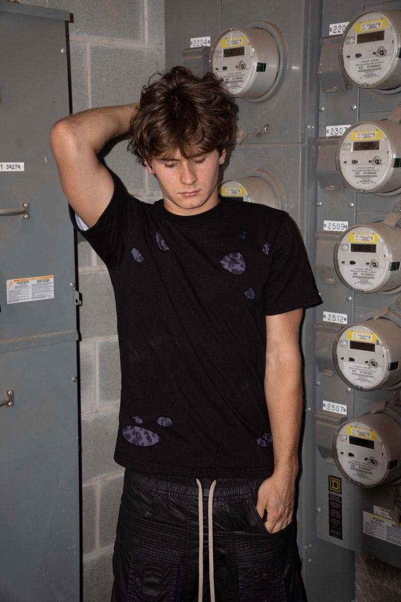
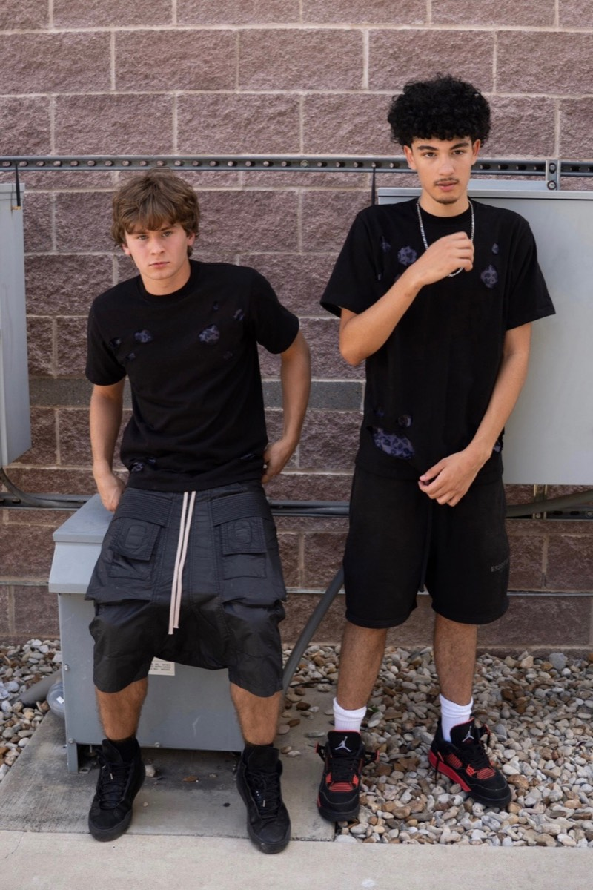
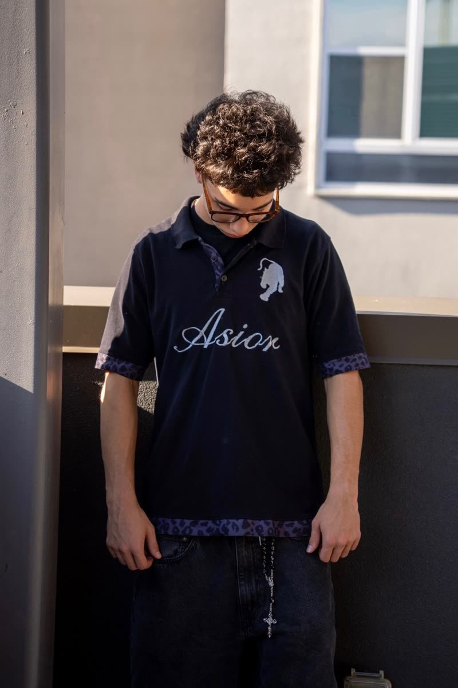

Shop All

Fall 2026
Shop the drop
Fall Collection
Asior is a small-run streetwear label out of the US.
- Heavyweight cotton Thick enough to hold its shape rather than thin blanks — 290+ GSM on the Ja-yu tee, 250+ on the Kova. Fabric weight is listed on the pieces we have it measured for.
- Small runs Pieces are produced in limited quantities and restocked rarely. When a size is gone it is gone until we run it again.
- Ships from the US Dispatched in 1–2 business days. 14-day returns on unworn items with tags.
Current drop
Shop all
Loading the shop…

Fall — worn in
Lookbook



Get 10% Off With Code ASIORTEN
Drops, restocks and what is running low.